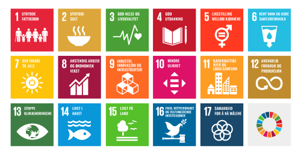

Bærekraft Og Samfunnsansvar
Hvlotopia er en fremtidig by bygget på prinsippene om bærekraft, teknologi og trygghet, med et fokus på miljøbevissthet og innovasjon. Byen er utformet med tanke på å møte fremtidens utfordringer innen energi, miljø, mobilitet og sikkerhet, og streber etter å bli et forbilde for andre byer.
Mobilitet
Transport i Hvlotopia er utslippsfri og effektiv. Byen har et velutviklet nettverk av elektriske selvkjørende biler, busser og droner som tilbyr transport på både bakken og i luften. Transportsystemet er integrert med smarte apper som hjelper innbyggerne med å planlegge sine reiser, redusere køer og fremme deling av transportmidler. I tillegg til elektrisk kollektivtransport, er det prioritert sykkelveier og gangstier for å oppmuntre til miljøvennlige og sunne transportvaner.
Helse og Sikkerhet
Sikkerheten i Hvlotopia er ivaretatt gjennom avansert teknologi og en holistisk tilnærming. Smarte sensorer og overvåkningssystemer er plassert over hele byen for å sikre effektiv krisehåndtering og forebygging av kriminalitet. Kunstig intelligens analyserer data fra disse systemene i sanntid for å oppdage potensielle trusler, som miljøkatastrofer eller tekniske feil. Helsevesenet er koblet opp mot det samme smarte nettverket, slik at innbyggere raskt kan få tilgang til medisinske tjenester. I tillegg er det utviklet robuste systemer for cybersikkerhet for å beskytte data og sikre trygg bruk av digitale tjenester i hverdagen.
Energi og Miljø
Hvlotopia er en fremtidig by bygget på prinsippene om bærekraft, teknologi og trygghet, med et fokus på miljøbevissthet og innovasjon. * Byen er utformet med tanke på å møte fremtidens utfordringer innen energi, miljø, mobilitet og sikkerhet, og streber etter å bli et forbilde for andre byer.
